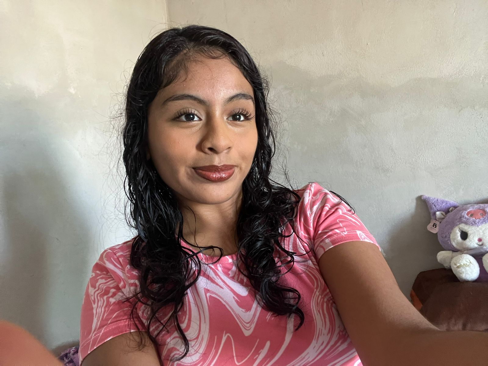

Mi nombre es Stephanie López soy una chica tranquila que no se mete en problemas y se sobre llevar las cosas cuando me enojo o me sucede algo feo.
Me encantan las flores y más si son tulipanes, tomar fotos al paisaje incluso a los atardeceres también por que llena una energía tranquila,
algo que me distigue podría ser que todas mis actividades del día lo hago escuchando música a mi me encanta cualquier genero musical desde
pop, banda, reggaeton incluso algunas de Junior H

Estar con mi familia es otra manera de estar tranquila y feliz pasar con ellos es lo que mas amo disfruto cada momento con ellos ya que para mí las relaciones y las experiencias compartidas son muy importantes. Creo que esas conexiones son parte de lo que nos forma como personas.
Mirando hacia el futuro, me gustaría viajar a ciertos lugares pienso que cada experiencia me ayuda a acercarme a eso y a seguir descubriendo quién soy.
